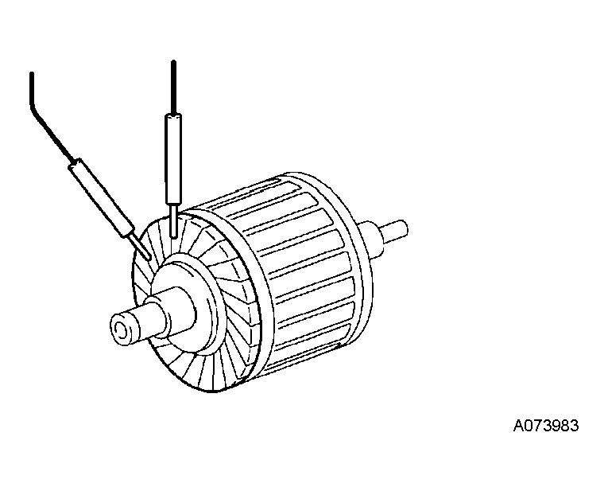
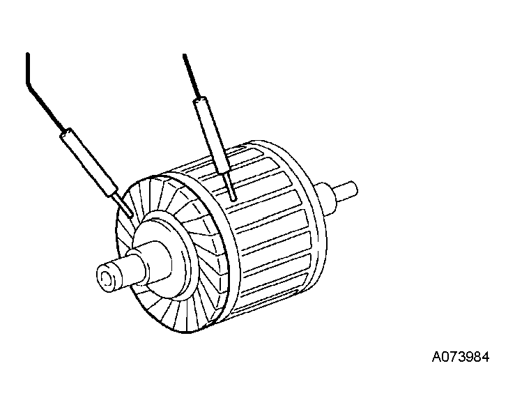
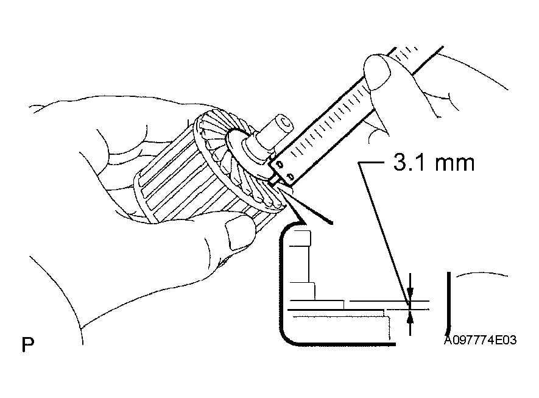
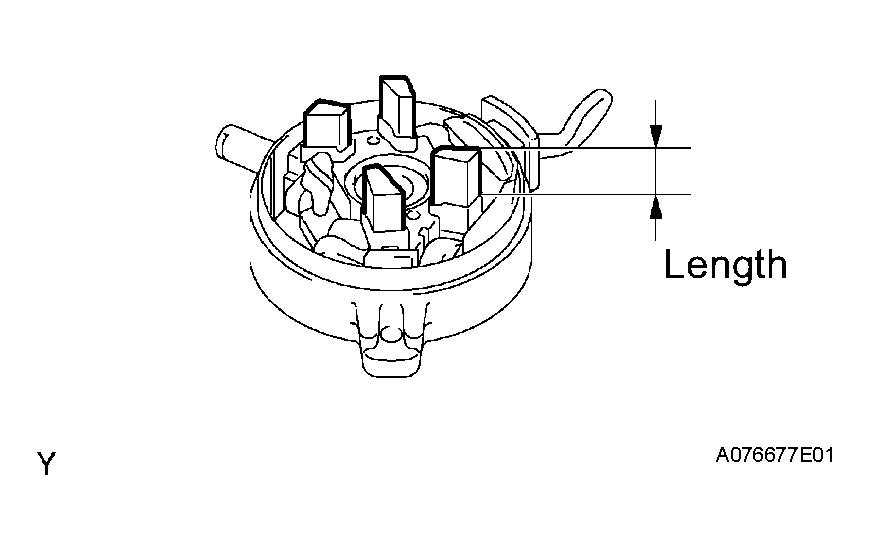
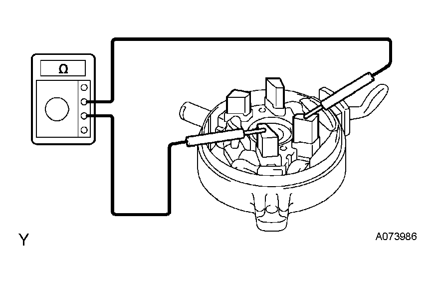
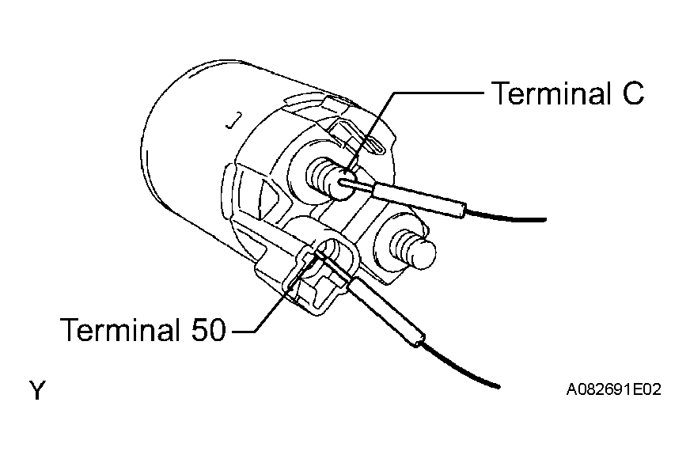
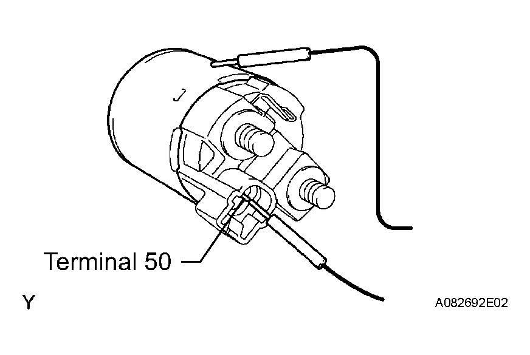

Starting (1NZ-FE): Starter: Inspection
- INSPECT STARTER ARMATURE ASSEMBLY
- Measure the resistance between any 2 segments of the commutator.

Courtesy of © TOYOTA, LICENSE AGREEMENT TMS1002Standard resistance: Below 1 Ω
If the result is not as specified, replace the starter armature assembly.
- Measure the resistance between each segment of the commutator and armature coil core.

Courtesy of © TOYOTA, LICENSE AGREEMENT TMS1002Standard resistance: 10 kΩ or higher
If the result is not as specified, replace the starter armature assembly.
- Using a vernier caliper, measure the depth indicated in the illustration.

Courtesy of © TOYOTA, LICENSE AGREEMENT TMS1002Standard depth: 3.1 mm (0.122 in.)
Maximum depth: 3.8 mm (0.150 in.)
If the depth is greater than the maximum, replace the armature assembly.
- Measure the resistance between any 2 segments of the commutator.
- INSPECT STARTER COMMUTATOR END FRAME ASSEMBLY
- Using a vernier caliper, measure the brush length.

Courtesy of © TOYOTA, LICENSE AGREEMENT TMS1002Standard length: 9.0 mm (0.354 in.)
Minimum length: 4.0 mm (0.158 in.)
If the length is less than the minimum, replace the starter commutator end frame assembly.
- Measure the resistance between the positive (+) and negative (-) brush holders.

Courtesy of © TOYOTA, LICENSE AGREEMENT TMS1002Standard resistance: 10 kΩ or higher
If the result is not as specified, replace the starter commutator end frame assembly.
- Using a vernier caliper, measure the brush length.
- INSPECT STARTER CENTER BEARING CLUTCH SUB-ASSEMBLY
- Check the gear teeth on the planetary gear, internal gear and starter clutch for wear or damage. If damaged, replace the gear or clutch assembly. Also check the drive plate ring gear for wear or damage.
- Rotate the pinion gear clockwise, and check that it turns freely. Try to rotate the pinion gear counterclockwise and check that it locks.
If necessary, replace the center bearing clutch subassembly.
- INSPECT MAGNET SWITCH BODY
- Check the operation.
- Push in the plunger, and then check that it returns quickly to its original position. If necessary, replace the magnet switch body.
- Check the pull-in coil.
- Measure the resistance between terminals 50 and C.

Courtesy of © TOYOTA, LICENSE AGREEMENT TMS1002Standard resistance: Below 2 Ω
If the result is not as specified, replace the magnet switch body.
- Measure the resistance between terminals 50 and C.
- Check the holding coil.
- Measure the resistance between terminals 50 and the switch body.

Courtesy of © TOYOTA, LICENSE AGREEMENT TMS1002Standard resistance: Below 1 Ω
If the result is not as specified, replace the magnet switch body.
- Measure the resistance between terminals 50 and the switch body.
- Check the operation.